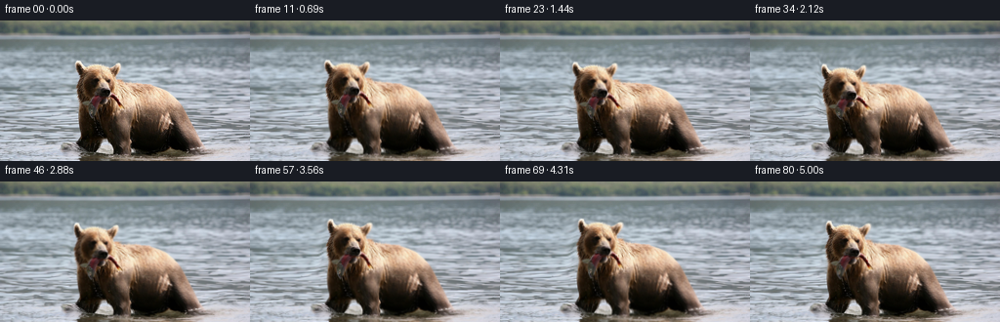

候选 01 · 2026-11-08T21:53:27.086186+00:00 · 点开播放与检查图
inspection.png

transition_check.png

代码变化
--- 上一保存版本
+++ 本次保存版本
@@ -0,0 +1,131 @@
+"""Animate the supplied still with coherent, small-scale image-space motion.
+Only the source RGB pixels and analytic displacement/light fields are used.
+"""
+from pathlib import Path
+import json
+import numpy as np
+from PIL import Image
+import artifact_io
+
+ROOT = Path(__file__).resolve().parent
+SOURCE = np.asarray(Image.open(ROOT / 'first_frame.png').convert('RGB'), dtype=np.uint8)
+H, W = SOURCE.shape[:2]
+Y, X = np.mgrid[:H, :W].astype(np.float32)
+
+def smooth(v):
+ v = np.clip(v, 0.0, 1.0)
+ return v * v * (3.0 - 2.0 * v)
+
+def track(t, values):
+ times = np.array([0, .60, 1.35, 2.15, 2.85, 3.45, 4.20, 5.0])
+ i = min(np.searchsorted(times, t, side='right') - 1, len(times)-2)
+ i = max(0, i)
+ f = smooth((t-times[i])/(times[i+1]-times[i]))
+ return values[i]*(1-f) + values[i+1]*f
+
+def sample(img, sx, sy):
+ sx = np.clip(sx, 0, W-1.001)
+ sy = np.clip(sy, 0, H-1.001)
+ x0 = sx.astype(np.int32); y0 = sy.astype(np.int32)
+ fx = (sx-x0)[..., None]; fy = (sy-y0)[..., None]
+ return ((img[y0,x0]*(1-fx)+img[y0,x0+1]*fx)*(1-fy) +
+ (img[y0+1,x0]*(1-fx)+img[y0+1,x0+1]*fx)*fy)
+
+def anatomy(x, y):
+ # Broad smooth anatomical supports. These extend into the immediate
+ # surroundings, so the original hairline remains continuous under motion.
+ torso = np.sqrt(((x-144)/68)**2 + ((y-106)/44)**2)
+ skull = np.sqrt(((x-102)/27)**2 + ((y-71)/34)**2)
+ a = 1-smooth((torso-.94)/.29)
+ b = 1-smooth((skull-.91)/.36)
+ animal = np.maximum(a,b)
+ head = (smooth((x-66)/13) * (1-smooth((x-123)/17)) *
+ smooth((y-27)/12) * (1-smooth((y-79)/28)))
+ return animal, head
+
+def displacement(x, y, t):
+ animal, head = anatomy(x,y)
+ start = smooth(t/.65)
+ depth = smooth((y-19)/115)
+ water = smooth((y-18)/15) * (1-animal)
+ # Advection of the original horizontal wave texture; independent long
+ # and short waves have different velocities and depth-dependent scales.
+ wx = (1.15*depth*(np.sin(y*.21+x*.032-t*1.25)-np.sin(y*.21+x*.032)) +
+ .65*depth*(np.sin(y*.46-x*.022+t*1.78)-np.sin(y*.46-x*.022)))
+ wy = (.36*depth*(np.sin(x*.097+y*.145-t*1.30)-np.sin(x*.097+y*.145)) +
+ .22*depth*(np.sin(x*.16-y*.37+t*1.65)-np.sin(x*.16-y*.37)))
+ dx = water*wx
+ dy = water*wy
+
+ shift = track(t,[0,-.25,-.65,-.95,-1.35,-1.55,-1.7,-1.8])
+ lift = track(t,[0,-.3,.20,.50,.15,-.25,-.4,-.05])
+ breath = .0045*(np.sin(t*1.85-.3)-np.sin(-.3))
+ dx += animal*(shift+(x-139)*breath*.60)
+ dy += animal*(lift+(y-136)*breath)
+
+ # A slow dip to secure the fish, then a small lift and sideways glance.
+ hx = track(t,[0,-.45,-1.9,-2.6,-1.1,.85,1.55,.55])
+ hy = track(t,[0,-.8,.75,2.6,1.0,-1.75,-2.1,-.55])
+ angle = track(t,[0,-.009,-.028,-.038,-.009,.035,.044,.012])
+ c, s = np.cos(angle), np.sin(angle)
+ rx, ry = x-104, y-88
+ dx += head*(hx+(c-1)*rx-s*ry)
+ dy += head*(hy+s*rx+(c-1)*ry)
+
+ # The planted limbs flex gently during the weight transfer.
+ leg = np.exp(-((x-124)/12.0)**4) * smooth((y-100)/28) * animal
+ stride = track(t,[0,.15,.55,1.25,1.5,.85,.25,.2])
+ dx += leg*stride
+ dy -= leg*.65*np.sin(np.pi*t/5)**2
+ rear = np.exp(-((x-195)/13.0)**4)*smooth((y-104)/28)*animal
+ dx -= rear*.48*np.sin(np.pi*t/5)**2
+ # A small jaw pulse and the gravity-driven flex of the hanging fish.
+ pulse = start*(.18*np.sin(t*6.0)+.13*np.sin(t*9.7))
+ jaw = np.exp(-((x-105)/10)**4-((y-81)/7)**4)
+ dy += jaw*pulse
+ flex = start*(.66*np.sin(t*4.8)+.25*np.sin(t*8.3))
+ fish = np.exp(-((x-93)/7.4)**4-((y-90)/11.5)**4)*smooth((y-78)/17)
+ dx += fish*flex
+ dy += fish*.20*start*np.sin(t*5.7)
+ tip = np.exp(-((x-121)/6.0)**4-((y-84)/7.5)**4)*smooth((x-112)/12)
+ dx += tip*.30*start*np.sin(t*5.2)
+ dy += tip*.75*start*np.sin(t*5.2+.3)
+ return dx,dy
+
+def frame(t):
+ if t == 0:
+ return SOURCE.copy()
+ # Invert the smooth forward deformation. This avoids holes, contour
+ # compositing and independent-layer edge artifacts.
+ sx=X.copy(); sy=Y.copy()
+ for _ in range(5):
+ dx,dy=displacement(sx,sy,t)
+ sx=X-dx; sy=Y-dy
+ out=sample(SOURCE.astype(np.float32),sx,sy)
+ animal,_=anatomy(sx,sy)
+ water = smooth((sy-23)/30)*(1-animal)
+ depth=smooth((Y-25)/110)
+ start=smooth(t/.7)
+ # Small changes in specular highlights, restricted to the water.
+ shimmer=(.95*np.sin(.19*X+.64*Y-t*2.0)+.5*np.sin(.41*X-.35*Y+t*1.4))
+ orig=(.95*np.sin(.19*X+.64*Y)+.5*np.sin(.41*X-.35*Y))
+ light=water*depth*(shimmer-orig)
+ # Broad low-amplitude wake rings at the feet. Existing water texture
+ # supplies the detail; these are soft lighting changes, not drawn lines.
+ for cx,cy,phase in [(91,134,0.0),(124,139,1.7),(201,134,.8)]:
+ r=np.sqrt(((X-cx)/1.0)**2+((Y-cy)*5.0)**2+1e-3)
+ wake=np.sin(r*.69-t*2.65+phase)-np.sin(r*.69+phase)
+ reach=np.exp(-((r-20)/20)**2)
+ foreground=smooth((Y-cy+1.5)/4.0)
+ light += .9*wake*reach*foreground*(1-animal*.88)*start
+ out += light[...,None]*np.array([.90,1.0,1.05],np.float32)
+ return np.clip(np.rint(out),0,255).astype(np.uint8)
+
+def main():
+ spec=json.loads((ROOT/'task_spec.json').read_text())
+ frames=np.stack([frame(i/spec['fps']) for i in range(spec['frames'])])
+ assert np.array_equal(frames[0],SOURCE)
+ artifact_io.save(frames,ROOT)
+
+if __name__=='__main__':
+ main()
命令 3 · 2026-11-08T21:51:39.829175+00:00/bin/bash -lc "python - <<'PY'
from PIL import Image,ImageDraw
im=Image.open('first_frame.png').resize((1024,576))
d=ImageDraw.Draw(im)
for x in range(60,221,10):
d.line((x*4,35*4,x*4,144*4), fill=(255,100,100),width=1);d.text((x*4+2,145),str(x), fill=(255,20,20))
for y in range(40,141,10):
d.line((60*4,y*4,220*4,y*4),fill=(255,100,100),width=1);d.text((240,y*4),str(y),fill=(255,30,30))
im.save('.tmp/grid.png')
PY"exit 0 命令 4 · 2026-11-08T21:53:23.751046+00:00/bin/bash -lc "cat > generate.py <<'PY'
\"\"\"Animate the supplied still with coherent, small-scale image-space motion.
Only the source RGB pixels and analytic displacement/light fields are used.
\"\"\"
from pathlib import Path
import json
import numpy as np
from PIL import Image
import artifact_io
ROOT = Path(__file__).resolve().parent
SOURCE = np.asarray(Image.open(ROOT / 'first_frame.png').convert('RGB'), dtype=np.uint8)
H, W = SOURCE.shape[:2]
Y, X = np.mgrid[:H, :W].astype(np.float32)
def smooth(v):
v = np.clip(v, 0.0, 1.0)
return v * v * (3.0 - 2.0 * v)
def track(t, values):
times = np.array([0, .60, 1.35, 2.15, 2.85, 3.45, 4.20, 5.0])
i = min(np.searchsorted(times, t, side='right') - 1, len(times)-2)
i = max(0, i)
f = smooth((t-times[i])/(times[i+1]-times[i]))
return values[i]*(1-f) + values[i+1]*f
def sample(img, sx, sy):
sx = np.clip(sx, 0, W-1.001)
sy = np.clip(sy, 0, H-1.001)
x0 = sx.astype(np.int32); y0 = sy.astype(np.int32)
fx = (sx-x0)[..., None]; fy = (sy-y0)[..., None]
return ((img[y0,x0]*(1-fx)+img[y0,x0+1]*fx)*(1-fy) +
(img[y0+1,x0]*(1-fx)+img[y0+1,x0+1]*fx)*fy)
def anatomy(x, y):
# Broad smooth anatomical supports. These extend into the immediate
# surroundings, so the original hairline remains continuous under motion.
torso = np.sqrt(((x-144)/68)**2 + ((y-106)/44)**2)
skull = np.sqrt(((x-102)/27)**2 + ((y-71)/34)**2)
a = 1-smooth((torso-.94)/.29)
b = 1-smooth((skull-.91)/.36)
animal = np.maximum(a,b)
head = (smooth((x-66)/13) * (1-smooth((x-123)/17)) *
smooth((y-27)/12) * (1-smooth((y-79)/28)))
return animal, head
def displacement(x, y, t):
animal, head = anatomy(x,y)
start = smooth(t/.65)
depth = smooth((y-19)/115)
water = smooth((y-18)/15) * (1-animal)
# Advection of the original horizontal wave texture; independent long
# and short waves have different velocities and depth-dependent scales.
wx = (1.15*depth*(np.sin(y*.21+x*.032-t*1.25)-np.sin(y*.21+x*.032)) +
.65*depth*(np.sin(y*.46-x*.022+t*1.78)-np.sin(y*.46-x*.022)))
wy = (.36*depth*(np.sin(x*.097+y*.145-t*1.30)-np.sin(x*.097+y*.145)) +
.22*depth*(np.sin(x*.16-y*.37+t*1.65)-np.sin(x*.16-y*.37)))
dx = water*wx
dy = water*wy
shift = track(t,[0,-.25,-.65,-.95,-1.35,-1.55,-1.7,-1.8])
lift = track(t,[0,-.3,.20,.50,.15,-.25,-.4,-.05])
breath = .0045*(np.sin(t*1.85-.3)-np.sin(-.3))
dx += animal*(shift+(x-139)*breath*.60)
dy += animal*(lift+(y-136)*breath)
# A slow dip to secure the fish, then a small lift and sideways glance.
hx = track(t,[0,-.45,-1.9,-2.6,-1.1,.85,1.55,.55])
hy = track(t,[0,-.8,.75,2.6,1.0,-1.75,-2.1,-.55])
angle = track(t,[0,-.009,-.028,-.038,-.009,.035,.044,.012])
c, s = np.cos(angle), np.sin(angle)
rx, ry = x-104, y-88
dx += head*(hx+(c-1)*rx-s*ry)
dy += head*(hy+s*rx+(c-1)*ry)
# The planted limbs flex gently during the weight transfer.
leg = np.exp(-((x-124)/12.0)**4) * smooth((y-100)/28) * animal
stride = track(t,[0,.15,.55,1.25,1.5,.85,.25,.2])
dx += leg*stride
dy -= leg*.65*np.sin(np.pi*t/5)**2
rear = np.exp(-((x-195)/13.0)**4)*smooth((y-104)/28)*animal
dx -= rear*.48*np.sin(np.pi*t/5)**2
# A small jaw pulse and the gravity-driven flex of the hanging fish.
pulse = start*(.18*np.sin(t*6.0)+.13*np.sin(t*9.7))
jaw = np.exp(-((x-105)/10)**4-((y-81)/7)**4)
dy += jaw*pulse
flex = start*(.66*np.sin(t*4.8)+.25*np.sin(t*8.3))
fish = np.exp(-((x-93)/7.4)**4-((y-90)/11.5)**4)*smooth((y-78)/17)
dx += fish*flex
dy += fish*.20*start*np.sin(t*5.7)
tip = np.exp(-((x-121)/6.0)**4-((y-84)/7.5)**4)*smooth((x-112)/12)
dx += tip*.30*start*np.sin(t*5.2)
dy += tip*.75*start*np.sin(t*5.2+.3)
return dx,dy
def frame(t):
if t == 0:
return SOURCE.copy()
# Invert the smooth forward deformation. This avoids holes, contour
# compositing and independent-layer edge artifacts.
sx=X.copy(); sy=Y.copy()
for _ in range(5):
dx,dy=displacement(sx,sy,t)
sx=X-dx; sy=Y-dy
out=sample(SOURCE.astype(np.float32),sx,sy)
animal,_=anatomy(sx,sy)
water = smooth((sy-23)/30)*(1-animal)
depth=smooth((Y-25)/110)
start=smooth(t/.7)
# Small changes in specular highlights, restricted to the water.
shimmer=(.95*np.sin(.19*X+.64*Y-t*2.0)+.5*np.sin(.41*X-.35*Y+t*1.4))
orig=(.95*np.sin(.19*X+.64*Y)+.5*np.sin(.41*X-.35*Y))
light=water*depth*(shimmer-orig)
# Broad low-amplitude wake rings at the feet. Existing water texture
# supplies the detail; these are soft lighting changes, not drawn lines.
for cx,cy,phase in [(91,134,0.0),(124,139,1.7),(201,134,.8)]:
r=np.sqrt(((X-cx)/1.0)**2+((Y-cy)*5.0)**2+1e-3)
wake=np.sin(r*.69-t*2.65+phase)-np.sin(r*.69+phase)
reach=np.exp(-((r-20)/20)**2)
foreground=smooth((Y-cy+1.5)/4.0)
light += .9*wake*reach*foreground*(1-animal*.88)*start
out += light[...,None]*np.array([.90,1.0,1.05],np.float32)
return np.clip(np.rint(out),0,255).astype(np.uint8)
def main():
spec=json.loads((ROOT/'task_spec.json').read_text())
frames=np.stack([frame(i/spec['fps']) for i in range(spec['frames'])])
assert np.array_equal(frames[0],SOURCE)
artifact_io.save(frames,ROOT)
if __name__=='__main__':
main()
PY
python generate.py"exit 0